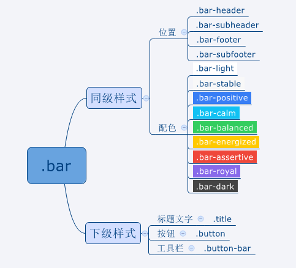

标题区总是位于屏幕顶部，页脚区总是位于屏幕底部，而内容区占据剩余的空间。 ionic使用以下CSS类声明区域性质:
.bar.bar-header - 声明元素为标题区
.bar.bar-footer - 声明元素为页脚区
.content - 声明元素为内容区
样式.bar将元素声明为屏幕上绝对定位的块状区域,具有固定的高度(44px);
.bar .ea-bar
一旦元素应用了.bar样式，就可以继续选用两类预定义样式来进一步 声明元素及其内容的外观：
1.同级样式：同级样式与.bar在同一元素上，声明元素位置配色等。
2.下级元素：下级元素只能应用在.bar的子元素上，声明子元素的大小等资源。
如图：ionic.bar.png
